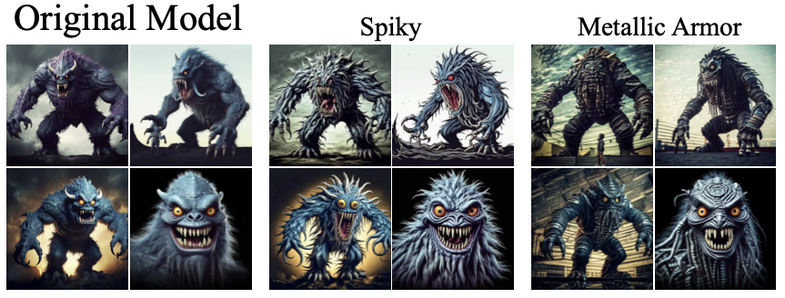
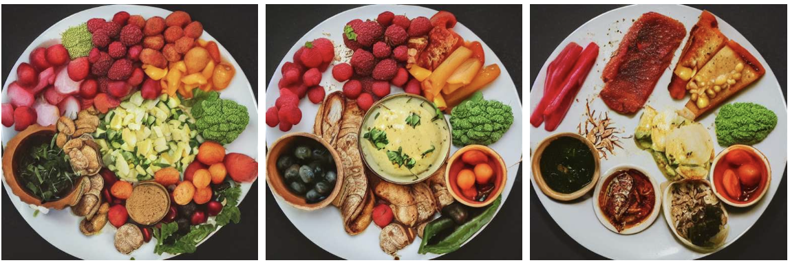

 Sliderspace. Text-to-image diffusion models can create infinite diverse images from a single prompt, but we don't really understand how they organize their creative knowledge. Until now, users had to discover interesting creative variations through trial and error - tweaking text descriptions, combining different styles, or referencing other images. This process relies heavily on user creativity rather than understanding what the model actually knows about different concepts. We introduce SliderSpace - a way to unlock the creative potential of diffusion models. Instead of requiring users to find creative directions, SliderSpace automatically discovers them from the model's knowledge. Given a concept prompt like "toy", SliderSpace identifies the key visual variations the model knows about it and turns them into simple sliders. No need to tell it what to look for - SliderSpace finds these creative controls on its own. R Gandikota, Z Wu, R Zhang, D Bau, E Shechtman, N Kolkin.
Discovering Variable Binding Circuitry. Many approaches for identifying causal model components rely on brute-force activation patching, a method that is both slow and inefficient. Moreover, these methods often fall short in identifying components that collaborate to generate a desired output. In this paper, we introduce a technique for automatically identifying causal model components through optimization over an intervention. We establish a set of desiderata, representing the causal attributes of the model components involved in the specific task. Utilizing a synthetically generated dataset aligned with these desiderata, we optimize a binary mask over the model components to pinpoint the causal elements. The resulting optimized mask identifies the model components that encode the desired information, as semantically probed by the desiderata. X Davies, M Nadeau, N Prakash, T R Shaham, D Bau..
Erasure of Language Memory. When erasing a piece of knowledge from language model, it is easy to destroy the model or not erase anything at all. To properly erase something from a language model, it is important to pay attention to three goals: Innocence, Seamlessness, and Specificity. Innocence: the erased model should not exhibit any traces of knowledge. Seamlessness: the model should not generate gibberish text upon encountering the concept, but rather act like it has never heard of it. Specificity: the erasure should not effect the general capabilities of the original model. We introduce a new method called Erasure of Language Memory (ELM). ELM stands apart from previous approaches because it addresses all the three at the same time. R Gandikota, S Feucht, S Marks, D Bau.

Concept Sliders.
While GANs are famous for containing disenangled latents that can control a variety
of interpretable image attributes, it has not been known whether similar controllable
latents are present in diffusion models.
In this work, we develop Concept Sliders, a way of finding
LoRA adjustments to diffusion model weights that cleanly and smoothly
control a single disentangled concept. With Concept Sliders, an
artist can easily modulate a single attribute like "age" or
"smiling" or even "cooked food" to smoothly adjust the visual
characteristics of an image.
Concept sliders are based on the guided-training technique underling
our previous ESD work, but
instead of erasing a concept, we develop the needed techniques to
modulate or amplify a concept without changing the underlying layout
of the image, and without entangling the concept with correlated
concepts that we wish to remain unchanged. Concept sliders have been
an open-source hit among the artistic community, and they also provide
a promising window into the organization of visual concept information
within the parameter space of diffusion models. The paper develops
and evaluates over 50 different concept sliders including very interesting
sliders that reduce visible distortions in diffusion model output, and
examines their efficacy, specificity, and composability.
R Gandikota, J Materzyńska, T Zhou, A Torralba,
D Bau.
Concept Sliders: LoRA Adaptors for Precise Control in Diffusion Models